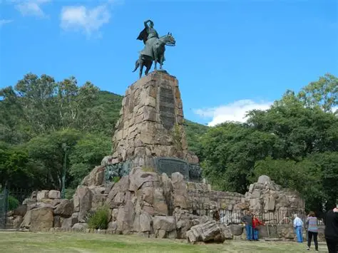
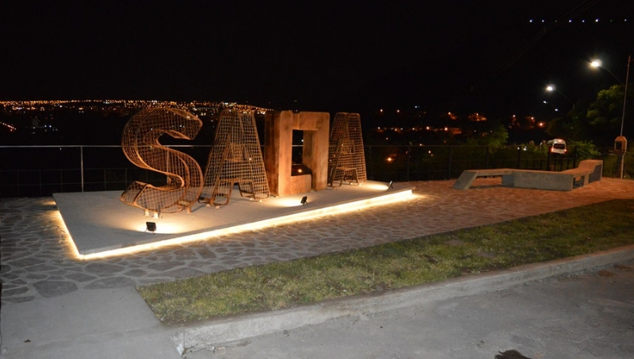
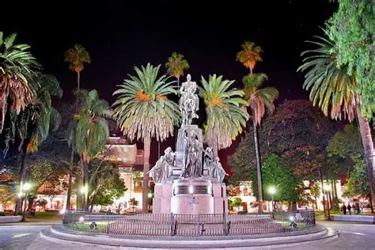
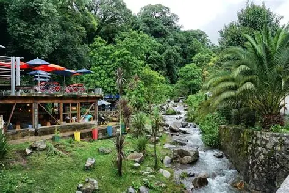
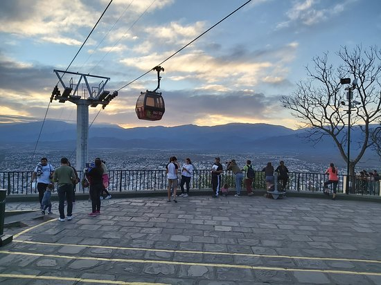
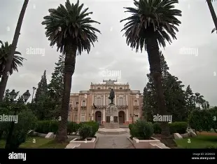
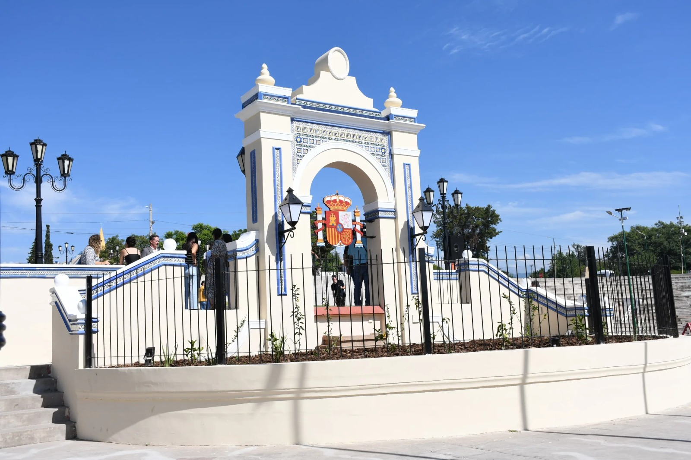
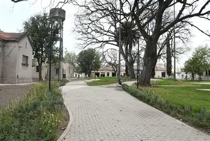
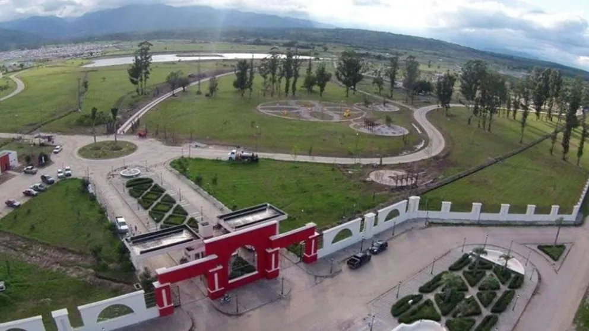
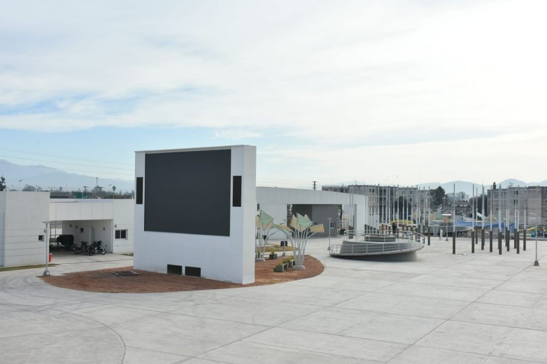

Lugares para tomar mate en Salta
Explora los mejores rincones de Salta para tomar unos mates con amigos o en familia. Hace clic en cualquier tarjeta para conocer su historia, comentarios y ubicacion.
Cada lugar fue seleccionado por su paisaje, tranquilidad y ambiente unico. Encontra tu proximo rincon favorito en Salta Argentina!
Ciudad : Salta Capital, Argentina
Clima promedio : 18 C
Mejor epoca : Abril - Octubre










Galeria de Lugares
Monumento Guemes
1 / 10
Contacto
Numero de telefono: (0387) 421-0000
Email: hola@saltademates.com